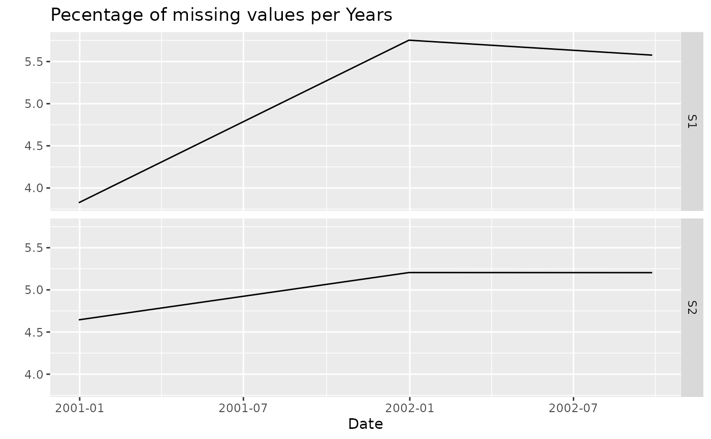

Computes the percentage of missing (NA) values in an xts object,
both overall and aggregated by one or more time periods. Assumes the timeseries have
been loaded using delim2xts function so that missing dates are filled with NA.
If this is not the case, or the timestep is not strict then the resulting missing values
will be wrong. Optionally groups
monthly missingness counts by calendar month for seasonal diagnostics.
Returns a data frame of overall missing percentages and, for each period,
the period-level percentages and an optional bar plot.
Arguments
- data
An xts object or matrix containing the time series data.
- periods
Character vector of aggregation periods. Accepts
"mins","minutes","hours","days","weeks","months","quarters", and"years".- plot
Logical. If
TRUE, bar plots of missing percentages per period are included in the output. Default isTRUE.- group_months
Logical. If
TRUEand"months"is included inperiods, the function additionally returns a matrix of missing percentages grouped by calendar month (rows) and series column (columns). Default isFALSE.
Value
A named list. The first element prct_missing is a data frame
of overall missing percentages (one row per series column). Subsequent
elements are named list_<period>, each a sub-list containing
prct_missing (the period-aggregated missing percentages) and, if
plot = TRUE, figure (a ggplot bar plot).
Examples
# Synthetic daily data with injected NAs
set.seed(123)
n <- 1000
x <- xts::xts(cbind(
S1 = rgamma(n, shape = 0.6, scale = 5),
S2 = rgamma(n, shape = 0.7, scale = 4)),
order.by = seq(as.Date("2000-01-01"), by = "day", length.out = n))
# Inject ~5% missing values
x[sample(n, 50), 1] <- NA
x[sample(n, 50), 2] <- NA
# Check missingness by month and year
miss <- check_missing(x, c("months", "years"))
miss$prct_missing
#> [1] 5 5
miss$list_years$figure

# With monthly grouping
miss <- check_missing(x, c("months"), group_months = TRUE)
miss$list_months$prct_missing$grouped_months
#> S1 S2
#> January 6.451613 4.301075
#> February 3.529412 3.529412
#> March 4.301075 5.376344
#> April 6.666667 4.444444
#> May 5.376344 6.451613
#> June 3.333333 3.333333
#> July 3.225806 2.150538
#> August 3.225806 5.376344
#> September 4.651163 8.139535
#> October 4.838710 4.838710
#> November 8.333333 3.333333
#> December 8.064516 9.677419